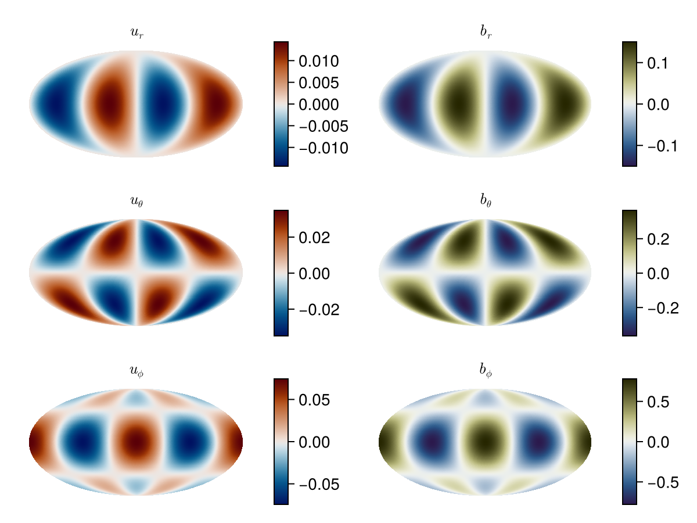
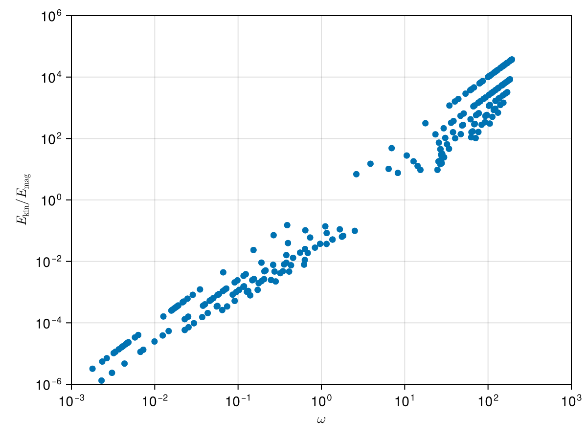

Malkus modes in the sphere
Malkus (1967) presented analytical solutions of hydromagnetic modes in the full sphere, assuming a background magnetic field that is purely azimuthal ($\mathbf{B}_0 = s \mathbf{e}_z$). Here, we will compute and visualize some of these modes numerically, using Limace.jl.
The evolution equations of the velocity $\mathbf{u}$ and magnetic field $\mathbf{b}$ are given by
\[\begin{align} \frac{\partial\mathbf{u}}{\partial t} + \frac{2}{\mathrm{Le}} \mathbf{e}_z\times\mathbf{u} &= -\nabla p + \left(\nabla\times\mathbf{B}_0\right)\times\mathbf{b} + \left(\nabla\times\mathbf{b}\right)\times\mathbf{B}_0,\\ \frac{\partial\mathbf{b}}{\partial t} &= \nabla\times\left( \mathbf{u}\times\mathbf{B}_0\right), \end{align}\]
satisfying $\mathbf{u}\cdot\mathbf{n} = \mathbf{b}\cdot\mathbf{n} = 0$ at $r=1$ (the surface of the sphere).
By projecting this equation onto poloidal and toroidal basis vectors, we eliminate the pressure $p$.
Assuming $\mathbf{u}(\mathbf{r},t) = \mathbf{u}(\mathbf{r}) \exp(\lambda t)$ (and analogously for $\mathbf{b}$) , the system of equations reduces to an eigen problem
\[\lambda \mathbf{B}\mathbf{x} = \mathbf{A}\mathbf{x},\]
where the eigen vector $\mathbf{x}$ contain the spectral coefficients of the bases elements and
\[\mathbf{B} = \begin{pmatrix} \mathbf{B}^u & 0 \\ 0 & \mathbf{B}^b \end{pmatrix},\]
with
\[B^{[u,b]}_{ij} = \int [\mathbf{u},\mathbf{b}]_i \cdot [\mathbf{u},\mathbf{b}]_j\,\mathrm{d}V,\]
The right-hand side is given by
\[\mathbf{A} = \begin{pmatrix} \mathbf{A}^u & \mathbf{A}^{ub} \\ \mathbf{A}^{bu} & 0 \end{pmatrix},\]
with
\[\begin{align} A^u_{ij} &= \int \mathbf{u}_i \cdot \left(2\Omega\mathbf{e}_z\times\mathbf{u}_j\right)\,\mathrm{d}V,\\ A^{ub}_{ij} &= \int \mathbf{u}_i \cdot \left(\left(\nabla\times\mathbf{B}_0\right)\times\mathbf{b}_j + \left(\nabla\times\mathbf{b}_i\right)\times\mathbf{B}_0\right)\,\mathrm{d}V,\\ A^{bu}_{ij} &= \int \mathbf{b}_i \cdot \left(\nabla\times\left(\mathbf{u}_j\times\mathbf{B}_0\right)\right)\,\mathrm{d}V. \end{align}\]
Solve using Limace.jl
There are two solve this problem using Limace.jl. One high level interface is provided by the LimaceProblem type, which allows to assemble the problem and solve it using the eigstarget function. The other is to use a slightly lower level interface, where the user assembles the matrices manually before solving the eigenvalue problem using eigen or eigstarget. In this example, we will use the lower level interface. First, load the packages:
using Limace
using LinearAlgebra, SparseArrays, CairoMakie, GeoMakie
using Limace.Discretization: spectospat
CairoMakie.activate!(; type="png", px_per_unit=2)Define a polynomial truncation degree N.
N = 88Create inviscid velocity and perfectly conducting magnetic field bases
u = Inviscid(N)
b = PerfectlyConducting(N) # same poloidal and toroidal scalars as Inviscid(N; m)Basis{PerfectlyConducting, Sphere}(8, -8:8, 0:0, PerfectlyConductingBC(), Sphere(1.0), Dict{Symbol, Float64}())The background magnetic field $\mathbf{B}_0 = s \mathbf{e}_\phi$ (with $s$ the cylindrical radius and $\mathbf{e}_\phi$ the unit vector in azimuthal direction) is defined and we choose our characteristic time scale as the Alfvén time, so that our nondimensional parameter is the Lehnert number.
B0 = BasisElement(b, Toroidal, (1,0,0), 2sqrt(2pi/15)) # corresponds to B_0 = s e_ϕ
Le = 1e-20.01Then, we compute our projection operators for the Coriolis force, the Lorentz force and the induction term. In the ideal limit here, no diffusive term is included.
RHSc = Limace.coriolis(u)
RHSl = Limace.lorentz(u, b, B0)
RHSi = Limace.induction(b,u,B0)
RHSd = spzeros(length(b),length(b)) #empty (no Ohmic diffusion)
RHS = [RHSc/Le RHSl
RHSi RHSd];In this way, we have assembled the right-hand-side matrix of the problem. This is equivalent to using the high level interface:
problem = LimaceProblem([u,b], [Limace.Inertial(u), Limace.Inertial(b), Limace.Coriolis(u, 1/Le), Limace.Lorentz(u,b,B0), Limace.InductionB0(b,u,B0)])
Limace.assemble!(problem)
RHS2 = problem.RHS
RHS ≈ RHS2trueWe can solve the problem using the high-level interface
Limace.solve!(problem)
λ, x = problem.sol.values, problem.sol.vectors;which computes all eigenvalues and eigenvectors of the problem and stores them in problem.sol.values and problem.sol.vectors, respectively.
This is equivalent to using the eigen function from LinearAlgebra directly:
λ, x = eigen(Matrix(RHS));The eigenvalues λ have zero real part, i.e. no viscous damping (you can type λ by typing \lambda<tab>). The eigenvectors are stored in a matrix x, so that λ[i]*x[:,i] ≈ A*x[:,i].
λ[1]*x[:,1] ≈ RHS*x[:,1]trueWe can compare some of the numerically calculated eigenvalues λ to analytical solutions. Malkus (1967) showed that the eigenvalues of the hydromagnetic modes can be expressed as a function of the inertial mode eigenvalues in the full sphere, so that
malkus_slow(m, N, Le, λ = imag(zhang_analytical(m, N))) = im * λ / 2Le * (1 - √(1 + 4Le^2 * m * (m - λ) / λ^2))
malkus_fast(m, N, Le, λ = imag(zhang_analytical(m, N))) = im * λ / 2Le * (1 + √(1 + 4Le^2 * m * (m - λ) / λ^2))malkus_fast (generic function with 2 methods)where the inertial mode eigenvalues can be approximated by Zhang et al. (2001) for equatorially symmetric inertial modes (exact for N=1):
function zhang_analytical(m, N)
sm = sign(m)
m = abs(m)
return -sm*2 / (m + 2) * (√(1 + m * (m + 2) / (N * (2N + 2m + 1))) - 1) * im
end
for m = vcat(-(N-1):-1, 1:(N-1))
@show any(isapprox(malkus_slow(m,1,Le)),λ)
@show any(isapprox(malkus_fast(m, 1, Le)),λ)
endany(isapprox(malkus_slow(m, 1, Le)), λ) = true
any(isapprox(malkus_fast(m, 1, Le)), λ) = true
any(isapprox(malkus_slow(m, 1, Le)), λ) = true
any(isapprox(malkus_fast(m, 1, Le)), λ) = true
any(isapprox(malkus_slow(m, 1, Le)), λ) = true
any(isapprox(malkus_fast(m, 1, Le)), λ) = true
any(isapprox(malkus_slow(m, 1, Le)), λ) = true
any(isapprox(malkus_fast(m, 1, Le)), λ) = true
any(isapprox(malkus_slow(m, 1, Le)), λ) = true
any(isapprox(malkus_fast(m, 1, Le)), λ) = true
any(isapprox(malkus_slow(m, 1, Le)), λ) = true
any(isapprox(malkus_fast(m, 1, Le)), λ) = true
any(isapprox(malkus_slow(m, 1, Le)), λ) = true
any(isapprox(malkus_fast(m, 1, Le)), λ) = true
any(isapprox(malkus_slow(m, 1, Le)), λ) = true
any(isapprox(malkus_fast(m, 1, Le)), λ) = true
any(isapprox(malkus_slow(m, 1, Le)), λ) = true
any(isapprox(malkus_fast(m, 1, Le)), λ) = true
any(isapprox(malkus_slow(m, 1, Le)), λ) = true
any(isapprox(malkus_fast(m, 1, Le)), λ) = true
any(isapprox(malkus_slow(m, 1, Le)), λ) = true
any(isapprox(malkus_fast(m, 1, Le)), λ) = true
any(isapprox(malkus_slow(m, 1, Le)), λ) = true
any(isapprox(malkus_fast(m, 1, Le)), λ) = true
any(isapprox(malkus_slow(m, 1, Le)), λ) = true
any(isapprox(malkus_fast(m, 1, Le)), λ) = true
any(isapprox(malkus_slow(m, 1, Le)), λ) = true
any(isapprox(malkus_fast(m, 1, Le)), λ) = trueSince the Inviscid basis is complete in the Cartesian polynomials, all values are exactly as the analytical value (up to machine precision). For higher values of n, the analytical solutions zhang_analytical(m, n) is only an approximation and one should compare to the roots of the univariate polynomial that gives the eigenvalues of the inertial modes.
Visualization
We can plot the velocity and magnetic field of the modes, for example at r=0.9
r = 0.9
nθ, nϕ = 100, 200(100, 200)We can find the $m=2$ and $N=1$ Magneto-Coriolis mode:
imode = findmin(x->abs(x-malkus_slow(2,1, Le)), λ)[2];The eigenvector is discretized at the spherical surface r=0.9 using the spectospat function.
ur, uθ, uϕ, br, bθ, bϕ, θ, ϕ = spectospat(x[:,imode], u, b, r, nθ, nϕ);
let
lons, lats = rad2deg.(ϕ).-180, rad2deg.(θ);
f = Figure()
kwargs = (; dest="+proj=moll", yticklabelsvisible=false, xticklabelsvisible=false, xticksvisible=false, yticksvisible=false)
for (i,(comp, title)) in enumerate(zip((ur, uθ, uϕ),(L"u_r", L"u_\theta", L"u_\phi")))
ax = GeoAxis(f[i,1]; kwargs..., title)
hidedecorations!(ax)
z = real.(comp[1,:,:])
clim = maximum(abs,z)
cax = surface!(ax, lons, lats, z', colormap=:vik, colorrange=(-clim,clim),shading=NoShading)
Colorbar(f[i,2],cax, flipaxis=true)
end
for (i,(comp, title)) in enumerate(zip((br,bθ,bϕ),(L"b_r", L"b_\theta", L"b_\phi")))
ax = GeoAxis(f[i,3]; kwargs..., title)
hidedecorations!(ax)
z = real.(comp[1,:,:])
clim = maximum(abs,z)
cax = surface!(ax, lons, lats, z', colormap=:broc, colorrange=(-clim,clim),shading=NoShading)
Colorbar(f[i,4],cax, flipaxis=true)
end
f
end
We see that the spatial structure of the magnetic field and velocity field is identical, with only a difference in amplitude.
Spectrum of modes
It is also possible to plot the spectrum of all solutions. We can use the ratio of kinetic to magnetic energy as a characteristic. We can compute the energies using
ekin, emag = Limace.Processing.energies(problem)2-element Vector{Vector{Float64}}:
[0.9999582377460192, 0.9999721927509835, 0.9999539579435803, 1.0000000000000002, 0.9999539579435802, 0.9999659697464824, 0.9999999999999997, 0.9995281891720355, 0.9999999999999997, 1.0 … 0.9999582377460192, 0.9999413792431817, 0.9999640742222757, 0.99940442877507, 0.9999640742222752, 0.9999999999999998, 0.9996889961208387, 1.0000000000000002, 0.9999711465984431, 0.9999711465984431]
[4.176225398071445e-5, 2.7807249016401595e-5, 4.604205641970268e-5, 6.94828973696868e-31, 4.604205641970269e-5, 3.4030253517688014e-5, 1.0216573160860238e-30, 0.00047181082796461253, 2.8193229352533596e-31, 7.921438721613354e-31 … 4.1762253980714434e-5, 5.86207568180279e-5, 3.592577772444434e-5, 0.0005955712249301021, 3.592577772444433e-5, 1.0471474656079063e-30, 0.00031100387916121027, 1.2522608734768119e-31, 2.8853401556849726e-5, 2.8853401556849712e-5]where we use the identity matrix as the mass matrix. The frequency-energy ratio spectrum is then plotted as
let
f = Figure()
ax = Axis(f[1,1], xscale=log10, yscale=log10, xlabel=L"\omega", ylabel=L"E_\mathrm{kin}/E_\mathrm{mag}")
scatter!(ax, abs.(imag.(problem.sol.values)) .+ eps(), ekin./emag)
xlims!(ax, Le/10,10/Le)
ylims!(ax, Le^3, 1/Le^3)
f
end
This page was generated using Literate.jl.